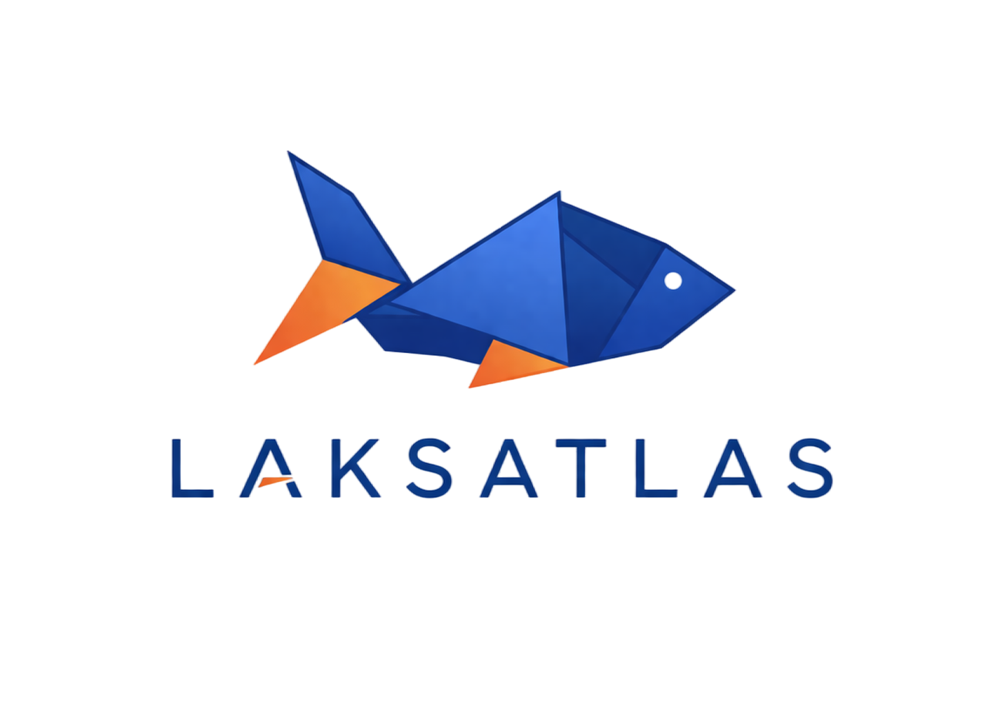

Loading week data...
← Live Map
5 YEAR VIEW
2020–2024 national averages · click any bubble to explore
click a bubble for graph
×
Loading locality data...

LAKSATLAS
Norway
Global
‹
Week
—
/
—
›
—
localities
Run fetch_data.py for this week
Norway
Global
Overview
Live Map
About
⊞ Filters
‹
Week
—
/
—
›
Norway Overview
Filter Localities
Below 0.2
—
0.2 – 0.5
—
Above 0.5 limit
—
Disease active
—
Fallow / Not reporting
—
Sea temperature layer
Environmental Impact
Sea Temperature
2°C
5°C
8°C
11°C
14°C
Below 0.2
0.2 – 0.5
Above limit
Disease
Fallow